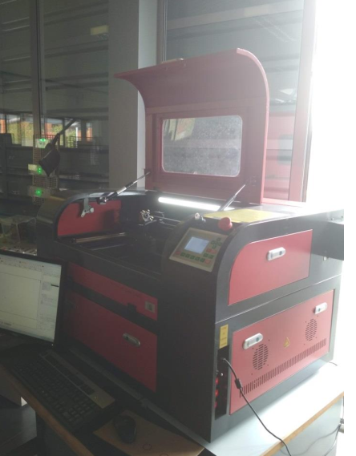
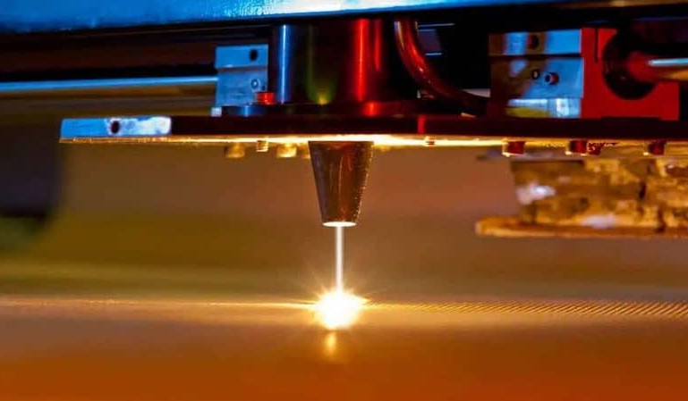

Utilisation de la découpe laser de cartons
Ce protocole vous guide, étape par étape, pour fabriquer la maquette physique de votre Tiny House à partir de votre fichier de découpe.

De la maquette numérique à la maquette physique
La grille d'évaluation attend une discussion sur la conception et la découpe laser, et un bilan sur le résultat obtenu et ce qu'il apporte à l'étude. Le fichier d'usinage — au format .DXF — est réalisé sous Solidworks, à partir de vos plans, puis importé sur le poste relié à la découpeuse.
Pour obtenir les fichiers au format DXF compatibles avec la découpeuse laser, il faut d'abord exporter les pièces à l'échelle demandée et vérifier qu'elles respectent bien les dimensions finales. La vidéo ci-dessous présente les étapes à suivre pour générer correctement le fichier de découpe, contrôler les dimensions et préparer le fichier pour l'usinage.
Une fois votre prototype terminé sur SketchUp, chaque groupe de deux élèves doit produire le fichier destiné à la découpeuse laser. Ce fichier — un PDF mis à disposition de l'élève via un bouton dédié — permet d'obtenir les pièces en carton à l'échelle de votre Tiny House.
Une fois découpées, les pièces en carton sont assemblées au pistolet à colle pour constituer la maquette physique finale.
Le laser est un équipement dangereux : ne jamais ouvrir le capot pendant la découpe, toujours refermer le capot avant de lancer l'usinage, et prévenir votre enseignant en cas de doute. Le pistolet à colle chauffe également fortement : manipulez-le avec précaution.
Les huit étapes
Avant d’utiliser la machine, il est essentiel de suivre les consignes officielles du FabLab du lycée pour garantir la sécurité et la qualité de la découpe. Le document ci-dessous reprend les règles de manipulation, les précautions à respecter et les étapes de mise en œuvre.

Consignes d’utilisation de la découpeuse laser
Ouvrir le PDF de consignes-
Mettre la machine sous tension
Vérifier que la multiprise est allumée et raccordée à la paillasse, elle-même sous tension. Allumer les interrupteurs de la machine de découpe.
-
Démarrer le poste informatique
L'unité centrale doit être allumée et le PC doit démarrer. Si besoin, appuyer sur la touche F1.
-
Exécuter l'application RDWorks
Lancer le logiciel de pilotage de la découpe laser depuis le bureau ; la fenêtre de travail s'ouvre, prête à recevoir un fichier.
-
Importer le fichier d'usinage
Depuis le menu d'import, sélectionner le fichier sur la clé USB. Le fichier .DXF est le fichier d'usinage réalisé sous Solidworks : c'est celui à choisir.
-
Installer le carton
Ouvrir le capot de la machine et placer un carton à la bonne épaisseur sur la partie grillagée. Le laser s'active et un spot lumineux apparaît à l'extrémité du carton déposé. Refermer le capot de la machine pour des raisons de sécurité avant toute chose.
-
Régler la puissance et la vitesse
Lorsque le tracé apparaît, cliquer sur « Layer » et le garder sur la couleur noire. Choisir la puissance du laser et la vitesse en fonction du gabarit de coupe. Par défaut : puissance min = puissance max = 100 % et vitesse = 60 mm/s — à ajuster selon un test préalable (grille de puissance/vitesse sur une chute de carton) si les valeurs par défaut ne conviennent pas.
-
Envoyer les paramètres à la machine
Cliquer sur « Download » pour envoyer les paramètres de découpe. La machine peut demander un nom pour le fichier : le renseigner, puis confirmer en cliquant sur « Oui ». Un message « File download success! » confirme le bon téléversement.
-
Lancer la découpe
Cliquer sur « Start » pour lancer la découpe laser. L'écran de la machine affiche la progression de l'usinage en temps réel.
Ce que la maquette carton doit démontrer
Au-delà de la fabrication elle-même, le dossier attend une discussion sur les choix de conception liés à la découpe laser (assemblage, découpe des ouvertures, épaisseur du matériau), ainsi qu'un bilan honnête : qu'est-ce que la maquette physique apporte que la maquette numérique ne montrait pas ? Quelles corrections a-t-elle révélées ?